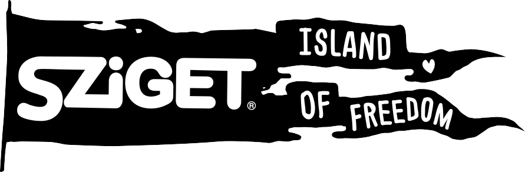
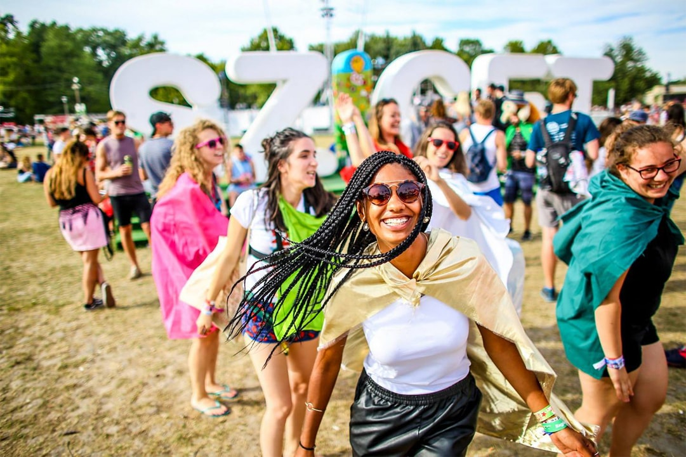
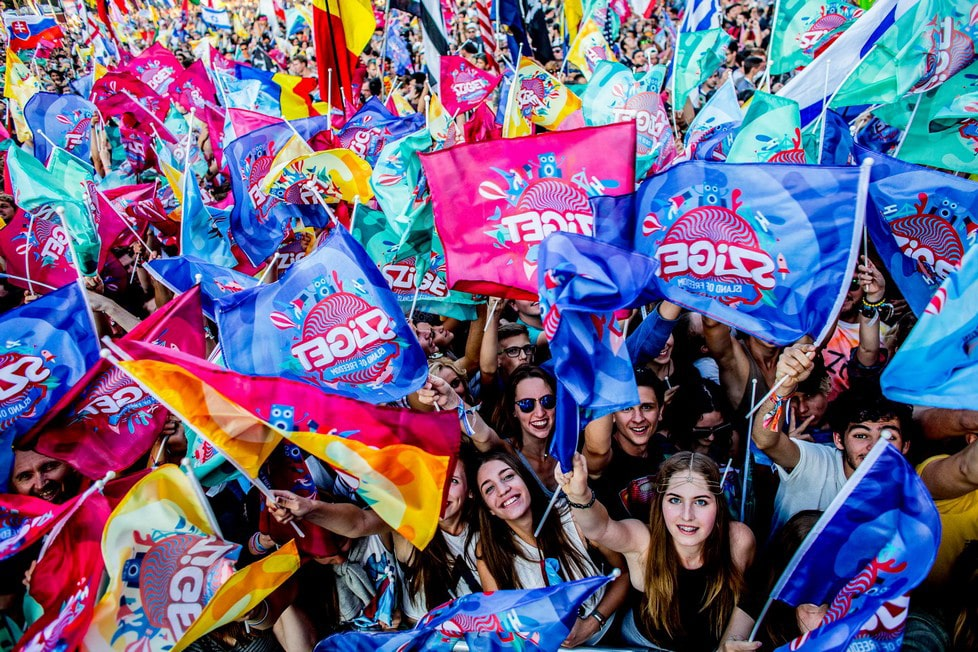
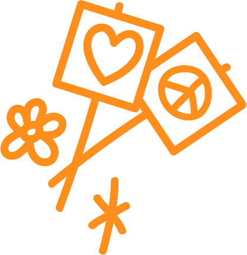
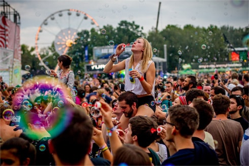
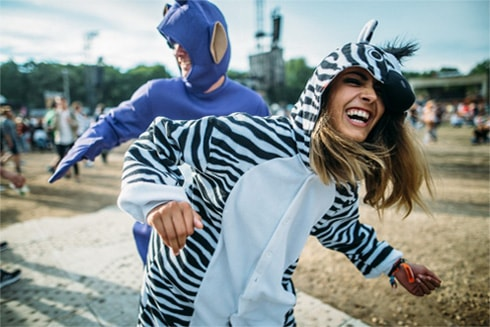
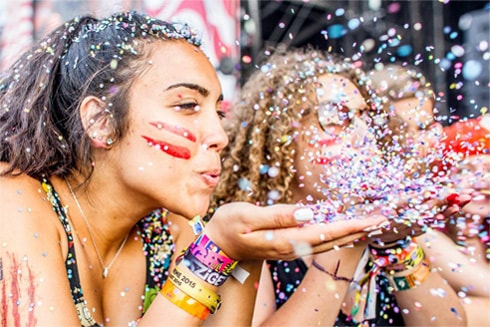
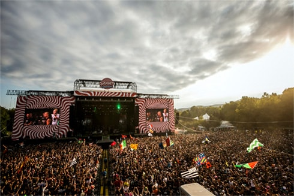
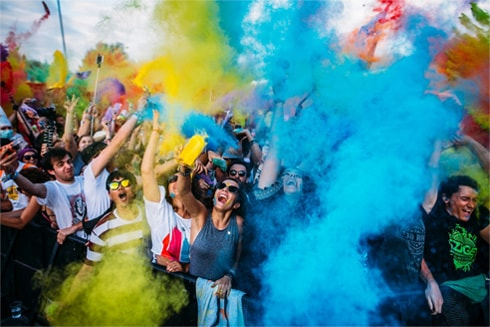
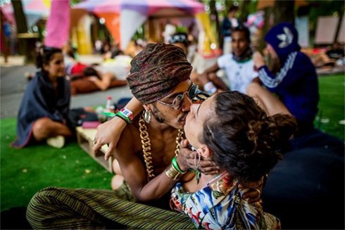

Sziget – один із найбільших фестивалів у світі з майже 27-літньою історією. Це“Найкращий великий фестиваль Європи”, “Фестиваль з найкращою атмосферою” і “Фестиваль з найкращим лайн-апом” за визнанням European Festival Awards, NME Festival Awards та мільйонів фанів і артистів з усіх куточків планети. Він відбувається у розпал літа в центрі Будапешта в Угорщині і відомий як Острів Свободи.

Sziget — значно більше,ніж музичний фестиваль.Це екстраординарна візуальна пригода,величезна територія спілкування, місце зустрічей і знайомств людей одне з одним. Це тимчасова республіка з власними правилами та цінностями, власним суспільством, власним паспортом, на віддаленій території зеленого острова, в оточенні мегаполіса.
Це відомі світові зірки на Main Stage і в лайн-апі різноманітних сцен, який припаде до смаку прихильникам усіх музичних стилів: електронної музики, панку і року, world music, опери і багатьох інших.
Пляж Sziget Beach, найоригінальніші «зруйновані» бари Будапешта Ruin Pubs Quarter, захопливі Color Party, Flag Party, Balloon Party, Beach Ball Party та Bubble Party –веселощі у форматі нон-стоп, мистецтво, спорт, розваги і тисячі занять на території Острова Свободи.
Все це Sziget, де щоденні вечірки починаються опівдні і тривають допоки знову не зійде сонце!

- 
- 
- 
- 
- 
- 
- • Sziget гостинно приймає фанів зі 100 країн світу та виконавців із близько 60 країн.
- • Протягом 7 днів Острів Свободи відвідує більше півмільйона людей (565 000 гостей у 2018-му стали рекордом).
- • Sziget – найближчий до України масштабний європейський фестиваль музики та мистецтв.
Sziget 2019 відбудеться 7-13 серпня і пройде під гаслом Love Revolution!
На ньому виступлять
Foo Fighters * Florence + The Machine * Ed Sheeran, Twenty One Pilots * Post Malone * The 1975 *
Martin Garrix * Richard Ashcroft * Franz Ferdinand * James Blake * Years & Years * Tove Lo * Razorlight *
Son Lux * Catfish and the Bottlemen * CHVRCHES * Jungle * Kodaline * The Blaze * Maribou State * IDLES *
Superorganism * PaleWaves* Parcels * Boy Pablo * Frank Turner & The Sleeping Souls * Of Mice & Men *
Frank Carter & The Rattlesnakes * Gang of Youths * ALMA * Yungblud * Tamino * Richie Hawtin-CLOSER *
JAIN * Yeasayer * Yellow Days * Tove Styrke * Masego * Iamddb. * Protoje & The Indiggnation * Xavier Rudd *
Wanda * W&W * Vini Vici * Carnage * SIGALA * Hucci * Elderbrook *ROOSEVELT * Anna of the North * Fakear * Valeras * Welshly Arms
Та багато інших!
Меседж “Love Revolution” демонструє цінності, які лежать в основі Sziget, які він представляє уже чверть століття.
Всі ми різні: ми приїжджаємо з різних куточків світу, говоримо різними мовами, сповідуємо різні релігії, маємо різний колір шкіри, різні інтереси і смаки, різні приорітети. Однак, коли ми збираємося разом, то усвідомлюємо, що сила нашого різноманіття об’єднує нас, і разом ми здатні змінити навколишній світ на краще.
Деталі про лайн-ап, типи квитків, ціни та акції, якдістатися на Sziget, де зупинитися та інші корисні поради шукайте на офіційному сайті SzigetFestival: ТУТ